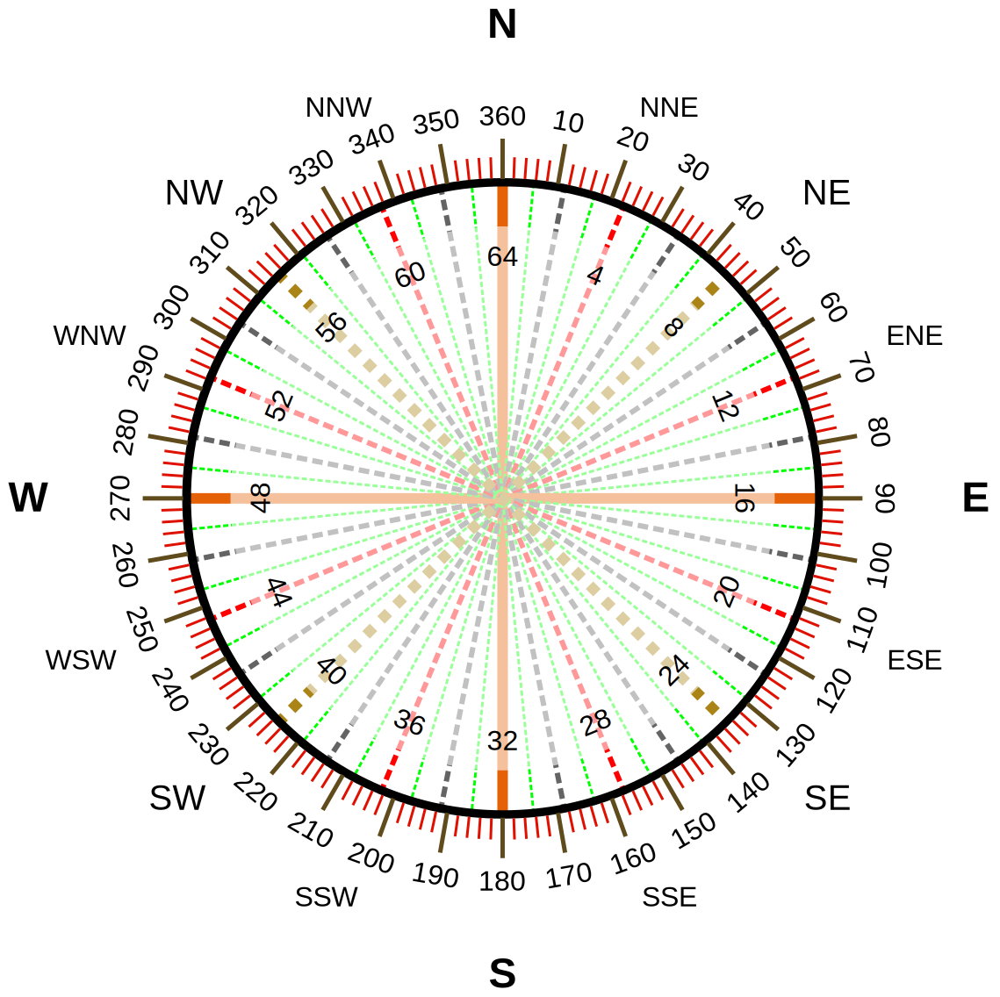

No GPS data available.
0.00000 N
0.00000 E
0.0 m
No altitude data available.
You need javascript to use this.
No direction available. Try this on a smartphone with an internal compass.
Note: the compass may be 90° off when used in landscape mode.
